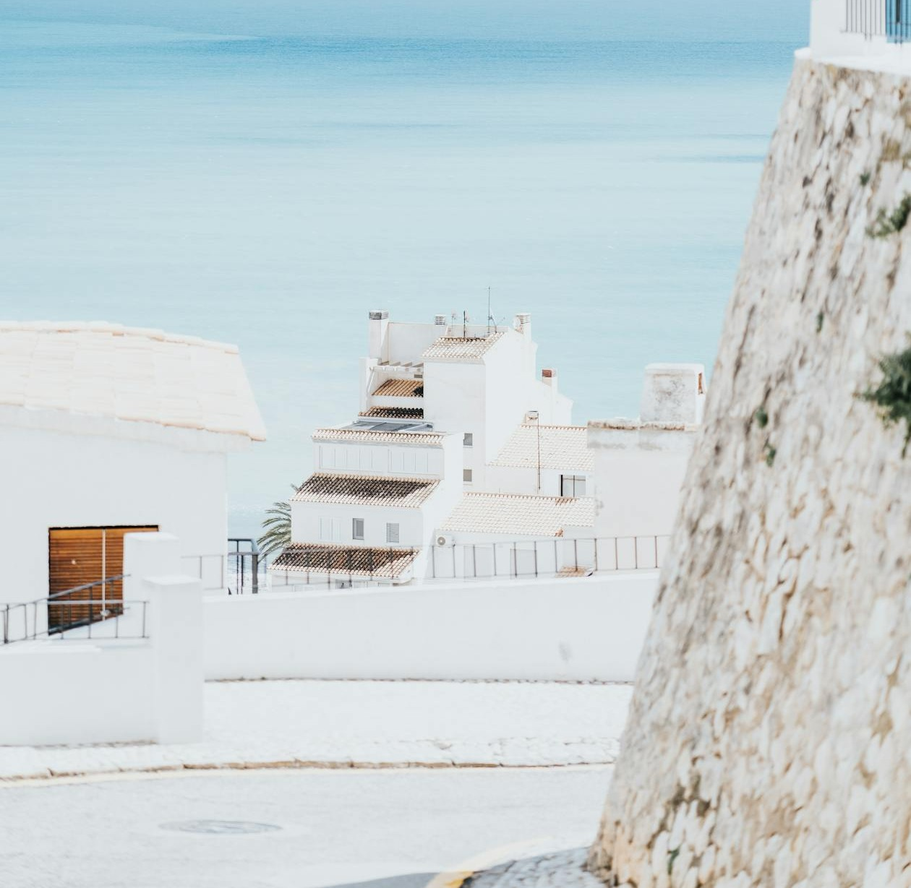

🌊 Море прогрелось — выдох
🌊 МОРЕ ПРОГРЕЛОСЬ — ВЫДОХ
Две недели назад я писала, что май — это про прогулки, не про купание: вода +17, ветер. Сейчас +20-21, и это уже другое дело. Первый заход без визга — короткий, но это уже да.
Полноценное лето стартует, когда вода переходит +22 — это будет ближе к концу июня, после Сан-Хуана. Сейчас — переходное окно: купаться уже можно, но толп ещё нет, шезлонги не выкуплены, парковки свободные.
Это, по-моему, лучшие две недели сезона.
Что я делаю прямо сейчас:
• Купаюсь утром, до жары — вода теплее, людей нет
• Дневной режим всё ещё «вне солнца» — тропы, городки
• Ужин на пляже, потому что вечера длинные и тёплые
И каждый раз думаю: в июле бы я мечтала о вот этой тишине.
📍 Costa Blanca
#сезон #июнь
10:00👁 ~?